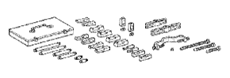
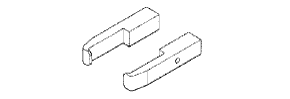

ГЕНЕРАТОР (для моделей с силой тока 100A) > РАЗБОРКА > Подготовка

| 09820-63021 | Набор гаечных ключей для шкива генератора | |
|  | 09950-40011 | Набор универсальных съемников В |
 | (09951-04020) | Траверса 200 |
 | (09952-04010) | Подвижный блок |
 | (09953-04020) | Центровочный болт 150 |
 | (09954-04010) | Рычаг 25 |
|  | (09955-04071) | Захват № 7 |
 | (09957-04010) | Переходник |
 | (09958-04011) | Держатель |
 | 09950-60010 | Комплект оправок |
| (09951-00250) | Оправка 25 | |
 | 09950-70010 | Комплект сменных рукояток |
 | (09951-07100) | Рукоятка 100 |
| Удлиненная торцевая головка 21 мм | - |
| Штифт (1,0 мм) | - |
| Запасной жгут проводов | - |
| Динамометрический ключ | - |
| Штангенциркуль | - |
 | 09082-00040 | Электрический диагностический прибор TOYOTA | |
 | (09083-00150) | Комплект проводов для диагностического прибора |